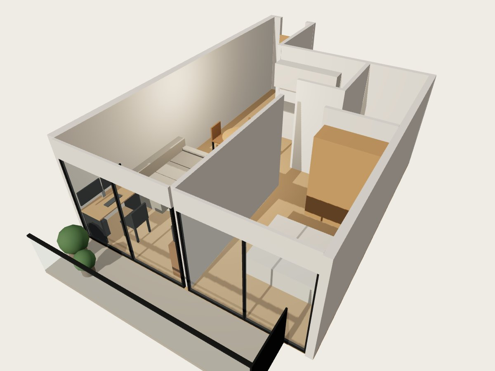
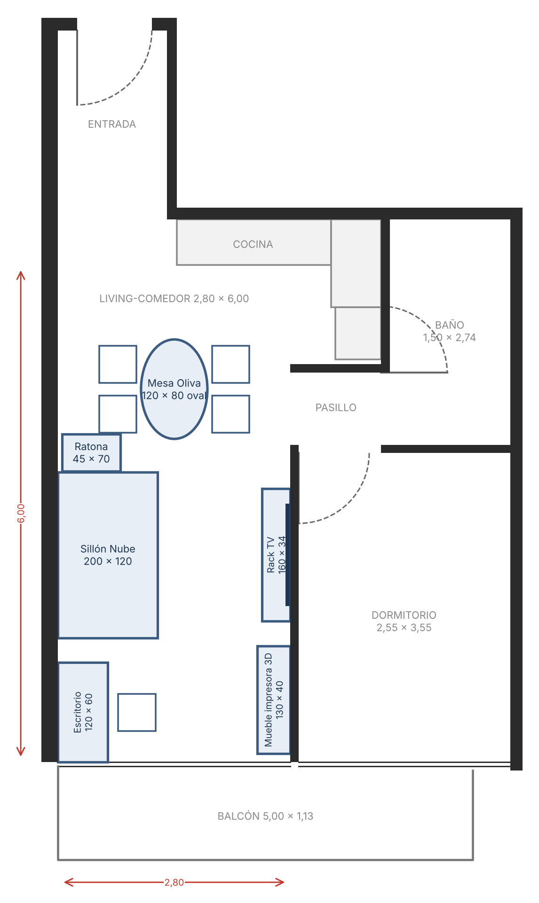
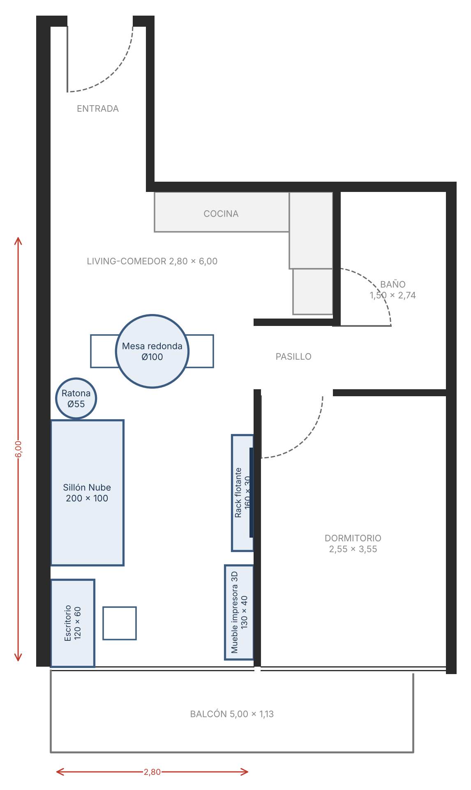
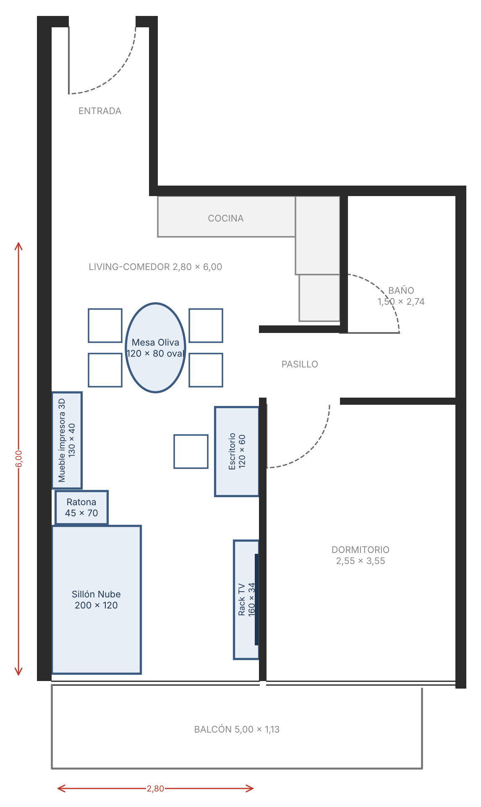
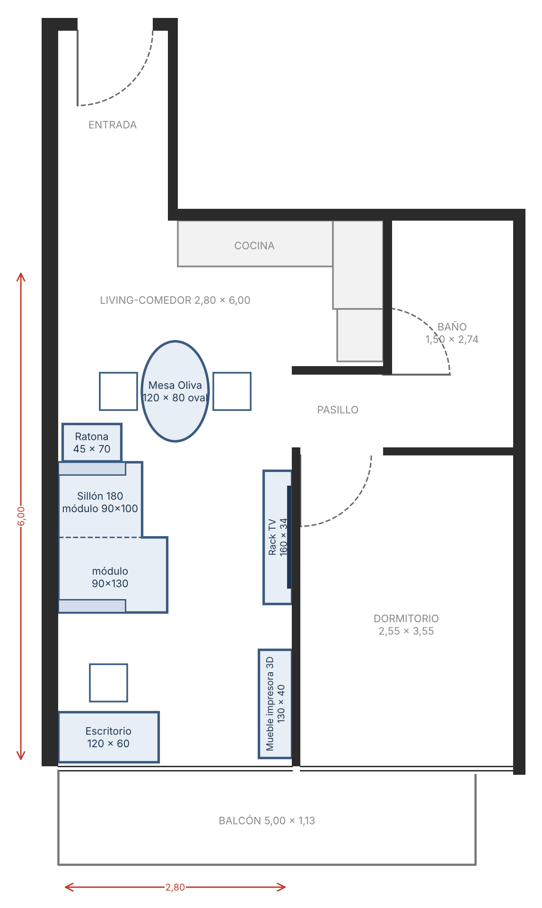
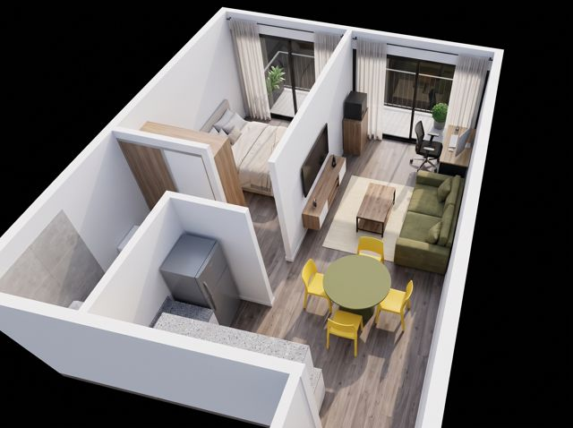
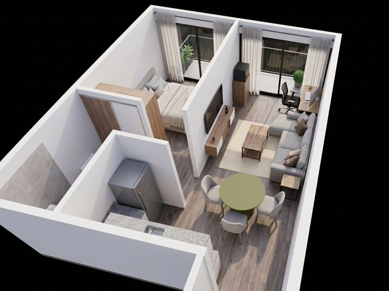

Depto · Living-comedor
Cómo entra todo en 2,80 × 6,00 m
Propuesta de distribución a escala real con sillón, rack, mesa, escritorio y la impresora 3D. Abajo están los planos de cada opción y el modelo para recorrer.

Volver al modelo 3D
Girá, acercate y mirá desde la entrada o el balcón
Distribuciones
Tocá el plano para verlo grande y hacer zoom.

- Paso frente al sillón~1,46 m
- Paso frente al módulo de 130~1,16 m
- Paso al balcón~1,20 m
- Ratona a silla del comedor~0,32 m
- Frente a la mesada0,90 m
- Paso frente al sillón~1,46 m
- Paso frente al camastro~1,06 m
- Paso al balcón~1,20 m
- Ratona a silla del comedor~0,32 m
- Frente a la mesada0,90 m

- Paso frente al sillón~1,50 m
- Paso al balcón~1,20 m
- Ratona a silla del comedor~0,20 m
- Frente a la mesada0,90 m
- Piso libre extra vs. opción 1~0,4 m²

- Living junto al ventanalmejor luz
- Paso central (impresora–silla)~1,20 m
- Paso al balcón (frente al módulo de 130)~1,16 m
- Frente a la mesada0,90 m
- Living junto al ventanalmejor luz
- Paso central (impresora–silla)~1,20 m
- Paso al balcón (frente al camastro)~1,06 m
- Frente a la mesada0,90 m

- Escritorio mirando al balcónsin reflejos
- Paso al balcón~1,20 m
- Silla de escritorio a sillón~0,63 m
- Paso frente al módulo de 130~1,16 m
- Ratona a silla del comedor~0,17 m
- Escritorio mirando al balcónsin reflejos
- Paso al balcón~1,20 m
- Silla de escritorio a sillón~0,63 m
- Paso frente al camastro~1,06 m
- Ratona a silla del comedor~0,17 m
Renders
Imágenes ilustrativas de cómo quedarían los muebles. Tocá para verlas en tamaño completo.


Opción 1 vs. opción 2
Medidas en centímetros.
| Mueble | 1 · Tus muebles | 2 · Más amplia |
|---|---|---|
| Sillón | 180: 90 × 100 + 90 × 130 | 180 × 100 parejo |
| Variante con camastro | 180 × 100 parejo + camastro suelto 90 × 40 (opciones 1 y 3) | |
| Brazos del sillón | 15 de ancho × 80 de profundidad, uno en cada extremo | |
| Mesa comedor | 120 × 80 oval | Ø 100 redonda |
| Rack TV | 160 × 34 | 160 × 30 flotante |
| Mesa ratona | 45 × 70 | Ø 55 redonda |
| Mueble impresora 3D | 130 × 40 | 130 × 40 |
| Escritorio | 120 × 60 | 120 × 60 |
| Sillas comedor | 2 (hasta 3) | 2 |
| Ubicación ratona | al costado del sillón en todas las opciones | |
Descargas
Las medidas de los ambientes salen del plano de la inmobiliaria. Los espesores de muros, la posición de las puertas y la mesada están estimados a partir del dibujo: conviene verificarlos en el depto antes de comprar.